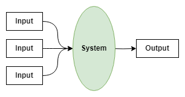

2 Concepts
This survey is concerned with the interaction between teams, software systems, and the flow of change from input (upstream) data to output (downstream) data.
Since this survey is specifically focused on CPI Production Systems, we orient the flow of change around key Generic Statistical Business Process Model (GSBPM) steps. Some of these steps are quite generic and common to most data teams (e.g., Ingestion, Processing), while others are very specific to CPI teams (e.g., Elementary Index Calculation, Elementary Index Aggregation).
The concepts introduced in the rest of this page can easily be applied to other domain-specific workflows, but everything that follows is implicitly explained in the context of these GSBPM steps.
2.1 Systems and Teams

For the purposes of this survey, we define a system as any indivisible (atomic) software component that takes one or more data inputs and produces one or more data outputs.
When we refer to an indivisible software component, we mean that the component runs “entirely or not at all” with respect to the transformation of inputs into outputs. For example, if there is one Python script that reads a file and writes an intermediate file, and a second R script that reads the intermediate file and produces another output file, we would consider this to be two separate systems.
The types of systems developed and maintained by the teams being surveyed can vary wildly. Therefore, we intentionally keep the definition of system vague so that it captures the key activity of transforming data without imposing any assumptions about how data are transformed.
A team is defined as a group of individuals who maintain one or more systems. Teams can be composed of many different types of professionals, but for the purpose of this survey we distinguish between those who are Information Technology (IT) professionals (e.g., software developers) and those who are non-IT analysts (e.g., economists, statisticians)1.
Importantly, we also distinguish whether these teams are embedded in the price-statistics domain of the organization or work elsewhere in the organization. The detail we care about here is whether the team developing and maintaining one or more systems shares business context and domain knowledge with the team making use of these systems, or whether they do not share this business context and domain knowledge.
In total, we define the following 5 team types for the purposes of this survey.
| Team Type | Description |
|---|---|
| Corporate IT | Information Technology (IT) professionals who are part of an organization-wide central group (i.e., not functionally embedded in the price statistics team). |
| Domain-Embedded IT | IT professionals who are functionally embedded in the price statistics team (i.e., part of the price-statistics team, not the corporate IT department). |
| Domain-Embedded Analysts | Professionals without a formal IT background (e.g., economists, statisticians) who are functionally embedded in the price statistics team. |
| Analysts Elsewhere in the Organization | Professionals without a formal IT background who are not functionally embedded in the price statistics team. |
| External Consultants or Contractors | Professionals outside of the organization to whom system development/maintenance work is contracted. |
2.2 Flow of Change
The business processes that NSOs follow to create their country’s CPI is a special case of the General Statistical Business Process Model (GSBPM). We base our flow of change on the GSBPM model and specialize it slightly towards the CPI domain. We define each step in our flow of change as follows.

| Process | Explanation |
|---|---|
| Data Ingestion | Activities to bring acquired data into a machine-readable state where it is ready for further processing. For example, entering paper surveys into an electronic database or querying a REST API to collect prices from a website. |
| Data Processing | Activities to clean, validate, correct, impute, or otherwise adjust the data so that it is in a state where it is ready to be used to produce elementary indexes. |
| Elementary Indexes | Calculate price indexes from the processed data for a given geography and product category (i.e., elementary aggregate) at a point in time2. |
| Aggregation | Aggregate the elementary price indexes into higher-level indexes (e.g., “All Items” CPI)3. |
| Finalization | Store price indexes for subsequent use as part of analytical activities, and eventual dissemination. |
Figure 2.1 overlays all of the concepts discussed so far onto a single diagram. The flow of work (raw data to final CPI) can be read from left to right, with the green ovals representing systems and the boxes drawn around one or more systems representing the teams that own them.
The systems in these diagrams can be “piped” together, implying that the output of one system becomes the input to the next system. To simplify the notation, the intermediate input/output boxes are simply shown as an arrow from one system node to the next system node.
In the event that multiple teams collectively maintain a very large system, a team can be interpreted as the larger organizational unit that oversees the various sub-teams involved.
2.3 Putting it All Together

Figure 2.2 shows an example of what one of these diagrams could look like for a real NSO. A description of team/system organization that could correspond to this example is described below.
A corporate IT team maintains a large Java application with an application-specific database that handles ingestion of most data sources4.
A team of domain-embedded analysts (e.g., economists and statisticians) maintain a system written in Python, using pandas to ingest data from one source that does not integrate with the corporate system5.
A team of domain-embedded analysts maintain a series of systems, using some combination of R and Python, that perform data processing and computation of elementary indexes.
The top system handles both the data processing step and the elementary index calculation step, implying it would not be straightforward to decouple these two concerns.
The bottom three cases have two distinct systems that handle data processing and elementary index calculation separately.
A second system owned by corporate IT aggregates the elementary indexes and stores the resulting price indexes in a database.
2.4 Modular vs. Monolithic Systems
We do not impose any restrictions on the number of systems that can belong under a team or a GSBPM step. Moreover, we do not impose any restriction on how many GSBPM steps a system can span. This flexibility lets us express the extent to which systems span across these GSBPM steps.

Figure 2.3 and Figure 2.4 show contrasting examples of two extreme scenarios. Figure 2.3 is an example where there is one system owned by one team that handles all 5 GSBPM steps for all inputs. In contrast, Figure 2.4 shows the scenario where each GSBPM step has a dedicated system that does not cross between GSBPM steps.

It is unlikely that any NSO will have systems organized like one of these extremes, rather most organizations will likely fall somewhere in between.
2.5 Representative Groups of Systems
To get a complete understanding of each NSO’s team organization and system topology, we would need to have a comprehensive whiteboarding session with representatives from each NSO to fully articulate their CPI team structures and system architectures. This is obviously not feasible.
To get around this impracticality, we introduce the concept of a representative system group to the survey, which lets respondents describe one or more groups of systems that follow a typical pattern in their organization. Figure 2.5 shows what one such system group might look like using the example shown earlier in Figure 2.2.

The systems enclosed by the dashed red line in the diagram constitute a representative group, composed of three subgroups of systems.
There is a single system for data ingestion that is maintained by the organization’s corporate IT department (system group 1).
There are three systems that handle data processing and three systems that handle elementary index calculation. Each pair of systems is maintained by one or more small teams of domain-embedded analysts (system group 2).
There is one large system that handles aggregation and finalization of elementary index calculations. This system is also maintained by the corporate IT department (system group 3).
Our rationale behind asking respondents to describe their representative system group is threefold:
Significantly reduce the response burden compared to completely articulating the state of all systems and teams that produce the CPI.
Reliably capture “system boundary” points where there is a switching between one group of systems and the next. While we do not have the resolution to know which GSBPM steps are crossed within a representative system group, we know for certain that there is a system boundary between two distinct representative system groups.
Reliably capture which kinds of teams occur together.
We recognize there is some grey area as to whether or not certain occupations are considered to be IT, and that two organizations may classify the same positions differently.↩︎
For readers unfamiliar with the CPI domain, this step refers to calculating period-over-period price changes for a particular product category at the lowest level of aggregation (e.g., “Canned salmon”).↩︎
For readers unfamiliar with the CPI domain, this step refers to the process of combining elementary indexes into higher level indexes. For example, “Canned Salmon” and “Canned tuna” belong to a higher level category such as “Canned and other preserved fish”, which in turn belongs to a higher level category like “Fish, seafood and other marine products”, and so on until you reach the “All Items” CPI.↩︎
The corporate IT team boxes are drawn in blue, indicating that they are a central-organization team that does not necessarily have detailed domain knowledge. In the absence of domain knowledge, this team would need to engage in a requirements gathering process with the domain team in order to build a system that performs the required capabilities.↩︎
The domain-embedded analyst boxes are drawn in yellow, indicating that they are a domain-aligned team.↩︎